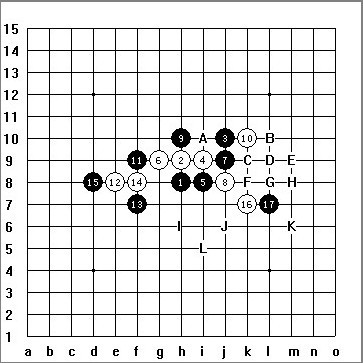

求解 白先如何杀？
首页
茗弈阁
#1 求解 白先如何杀？ 作者：玉水凌风 发表时间：2010-12-20 12:18:43
 ［ 茗弈小刀 于 2010-12-26 13:26:29 时花20金币送鲜花一朵］
#2 Re:求解 白先如何杀？ 作者：维尔斯特拉斯 发表时间：2010-12-20 13:36:40
J11？
［此帖子已被 维尔斯特拉斯 在 2010-12-20 15:49:58 编辑过］
#3 Re:Re:求解 白先如何杀？ 作者：胆小的骆驼 发表时间：2010-12-20 23:40:57
J11看着也不错没拆了，拆了一下这路可以胜
=======上图对应的爱五子棋谱代码如下，以便你拆解：========
h8h9j10i9i8g9j9j8h10k10f9e8f7f8d8k7l7k8k9l8m8j5
======================================================下面是地毯
 疏星一败17地毯.rar
疏星一败17地毯.rar［ 茗弈小刀 于 2010-12-26 13:26:14 时奖励此帖[金币加 100 威望加1］
#4 Re:求解 白先如何杀？ 作者：安娜制作所 发表时间：2010-12-21 8:07:47
这个22是妙手!
#5 Re:求解 白先如何杀？ 作者：踵酃 发表时间：2010-12-21 9:21:54
经常看到这种手法，妙也变得再正常不过了。
#6 Re:求解 白先如何杀？ 作者：与郎共五 发表时间：2010-12-21 9:57:48
地毯很多手机读者都是看不到的，同时发一两个最强防守那样最好。
#7 Re:求解 白先如何杀？ 作者：茗弈宽容 发表时间：2010-12-26 13:25:25
=======上图对应的爱五子棋谱代码如下，以便你拆解：========
h8h9j10i9i8g9j9j8h10k10f9e8f7f8d8k7l7m8
======================================================这个18也可以杀。